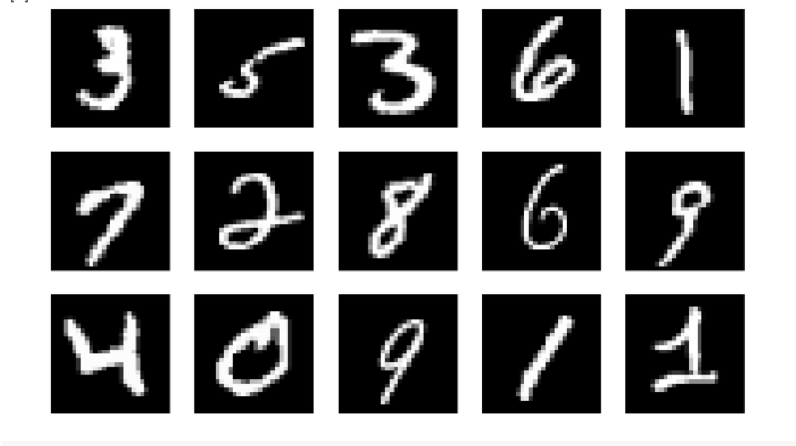

Introduction
Using CNNs to Classify Hand-written Digits on MNIST Dataset
MNIST (Modified National Institute of Standards and Technology) is a well-known dataset used in Computer Vision that was built by Yann Le Cun et al. It is composed of images that are handwritten digits (0-9), split into a training set of 50,000 images and a test set of 10,000, where each image is 28 x 28 pixels in width and height.
This dataset is often used for practicing any algorithm made for image classification, as the dataset is fairly easy to conquer.
Result and Discussion
Figure 1

Figure 2


Figure 3
Figure 4
Figure 5

Figure 6
Figure 7

Scenarios where neural network can be applied and where our implementation could be useful:
- Optical character recognition (OCR) - CNNs can be used to recognize handwritten characters in scanned documents and images, allowing for the conversion of handwritten text to digital text.
- Automated check processing - Banks and financial institutions can use CNNs to recognize handwritten digits on checks, allowing for faster and more accurate processing of checks.
- Medical image analysis - CNNs can be used to recognize hand-written numbers on medical images, such as X-rays, MRIs, and CT scans, which can help in identifying specific regions or areas of interest in the images.